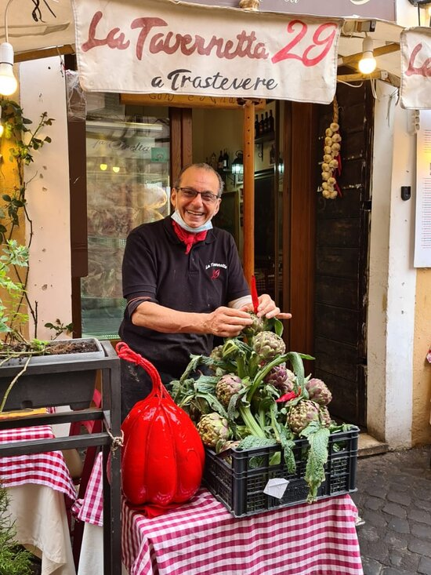

Your definitive guide to Rome's Trastevere neighborhood.
Welcome across the river!
Trastevere, Rome's culinary haven, boasts traditional eateries serving authentic Roman fare and innovative spots that elevating Italian cuisine. Artisanal gelato shops and pastry corners add sweet nuances, while vibrant wine bars and rustic pubs lead a bustling nightlife. Offering a myriad of epicurean delights and vibrant nightlife, Trastevere encapsulates the quintessential Roman culinary and social experience. All this compacted into a charming neighborhood just across the Tiber river.
Featured Locations
Tony's Tavernetta

La Tavernetta 29 Da Tony E Andrea is a highly-rated restaurant in Rome, Lazio, known for its delicious Italian cuisine, friendly service, a cozy atmosphere, and its charismatic owner, Tony.
Meccanismo offers a unique and contemporary menu of beverages, combining artful presentation and bold flavors, making it a must-visit for those seeking a modern twist on a traditional Italian drinks.
Explore the vibrant and eclectic ambiance of Freni e Frizioni, a unique bar in Rome where historic charm meets industrial flair, offering an enticing mix of craft cocktails and a stylish atmosphere.